Ordens de produção
As ordens de produção do ERP da Olist registram e acompanham a fabricação de um produto: o que será produzido, a quantidade, as datas, a composição e as etapas. Você consulta a lista, inclui a ordem, imprime, lança estoque, muda a situação e identifica ordens ligadas a uma venda.
A consulta fica em Suprimentos > Ordens de Produção. O lançamento de estoque das ordens filhas, o que sai na impressão e os marcadores ficam nas configurações de Suprimentos.
Importante
- Para a ordem aparecer como gerada pela venda nesta tela, ela já precisa estar ligada a uma venda.
- O produto da inclusão precisa ser localizado na busca de Produto a ser produzido.
Instruções
Consultar as ordens
-
Acesse Suprimentos > Ordens de Produção.

-
Clique em Todas, Em aberto, Em andamento, Finalizada ou Cancelada. Cada aba mostra a situação e a quantidade.
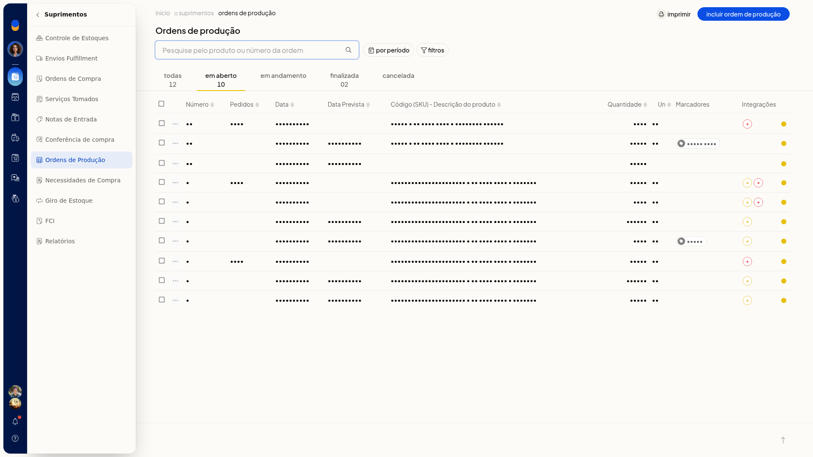
-
Use a pesquisa ou o período. No período, escolha Sem filtro, Do dia, Do mês, Do intervalo ou Previstos para.
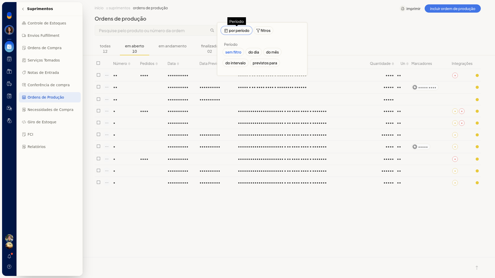
-
Em Do intervalo, informe De e Até no formato dd/mm/aaaa.
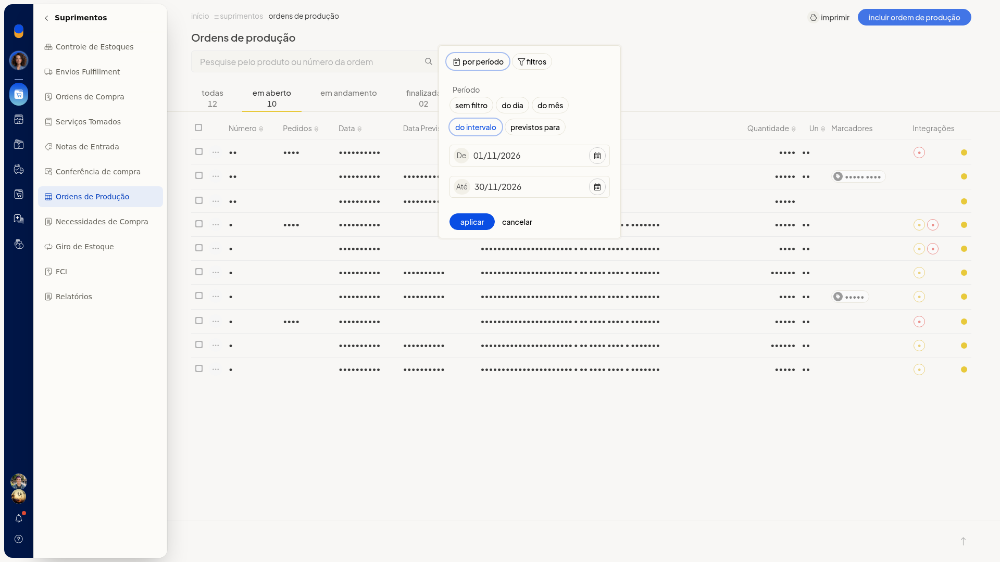
-
Abra os filtros, informe o texto em Ordens de produção, o Número do Pedido de Venda e o Marcador. Clique em Aplicar. A lista passa a mostrar as ordens da situação e do período ou filtro escolhidos, sem alterar os registros. Cancelar descarta o filtro.

Incluir uma ordem de produção
-
Em Ordens de Produção, clique em Incluir ordem de produção.
-
Em Produto a ser produzido, digite ao menos 2 caracteres e escolha o produto sugerido.
-
Informe Quantidade, Data, Data prevista, Número da OP, Observações e Marcadores. Use dd/mm/aaaa nas datas. O Número da OP pode já vir preenchido. Em Marcadores, separe os nomes por vírgula ou tab. Cada marcador passa a aparecer como chip. Nenhum desses campos é obrigatório.
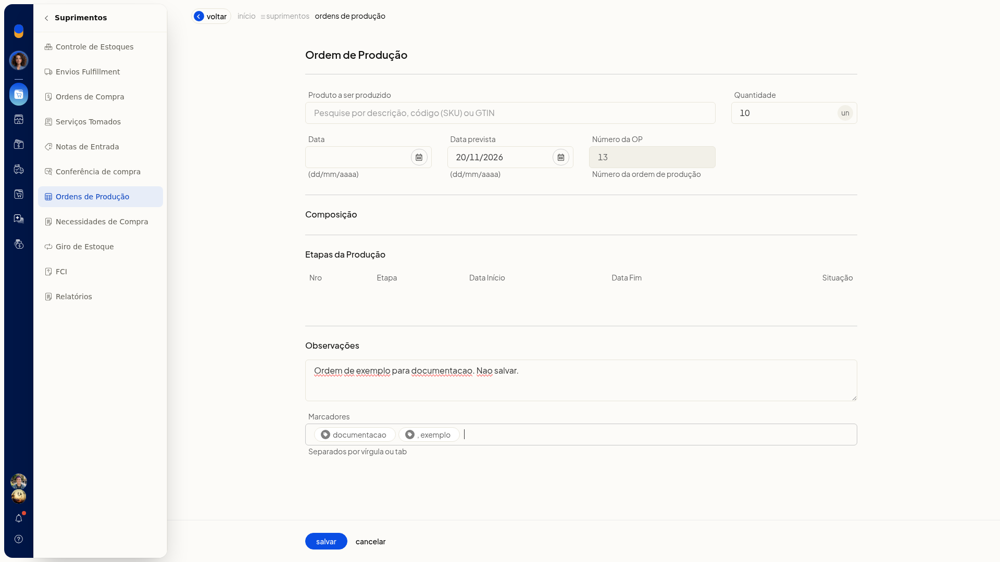
-
Confira Composição e Etapas da Produção. As colunas das etapas são Nro, Etapa, Data Início, Data Fim e Situação. Na inclusão, as etapas ficam vazias até você escolher o produto.
-
Clique em Salvar para gravar a ordem. Cancelar descarta os dados e volta à lista.
Usar as ações da ordem
-
Na lista, abra a ordem ou o menu de ações da linha.
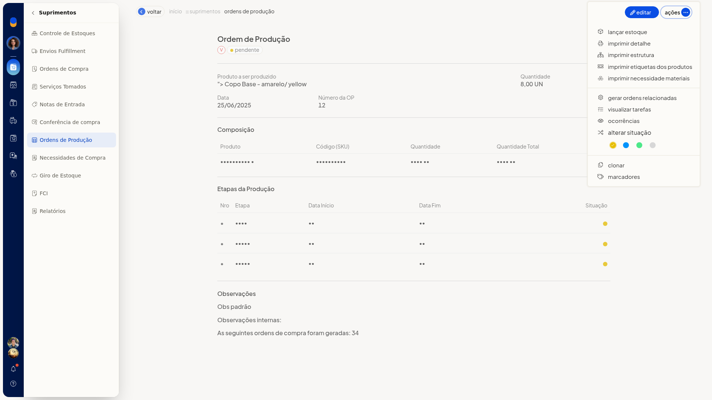
-
Escolha a ação: Lançar estoque, Estornar estoque, Imprimir detalhe, Imprimir estrutura, Imprimir etiquetas dos produtos, Imprimir Necessidade materiais, Gerar ordens relacionadas, Gerar ordens de compra, Gerenciar lotes e validades, Visualizar tarefas, Ocorrências, Alterar situação, Clonar, Marcadores, Alterar marcadores ou Excluir ordens de produção.
-
Em Alterar situação, escolha Pendente, Andamento, Finalizada ou Cancelada.
-
Na ordem aberta, confira a composição pelas colunas Produto, Código (SKU), Quantidade e Quantidade Total. Etapas da Produção é somente leitura, com Nro, Etapa, Data Início, Data Fim e Situação. A página também mostra Data Término e Pedidos Relacionados.
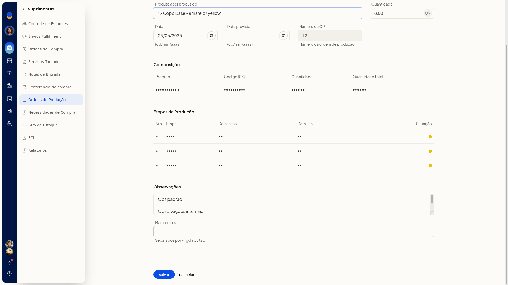
-
Em Visualizar tarefas, clique em Fechar para sair do painel.
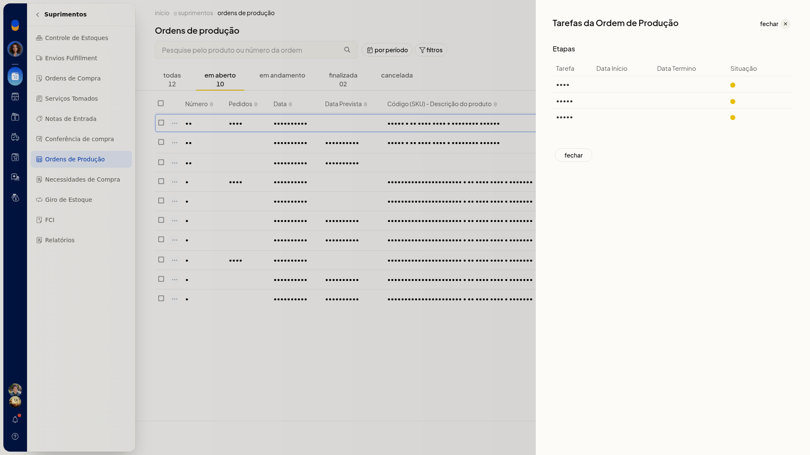
Reconhecer ordens ligadas à venda
- Na lista, leia o selo V, com o texto Gerada pela Venda, e o selo E, com o texto Estoque lançado. Os dois podem aparecer juntos.
- No filtro, informe o Número do Pedido de Venda e clique em Aplicar. A lista mostra as ordens desse pedido.
Configurar estoque e impressão
-
Acesse Configurações > Configurações ERP.
-
Na lista de configurações de Suprimentos, clique em Configurações de ordens de produção.
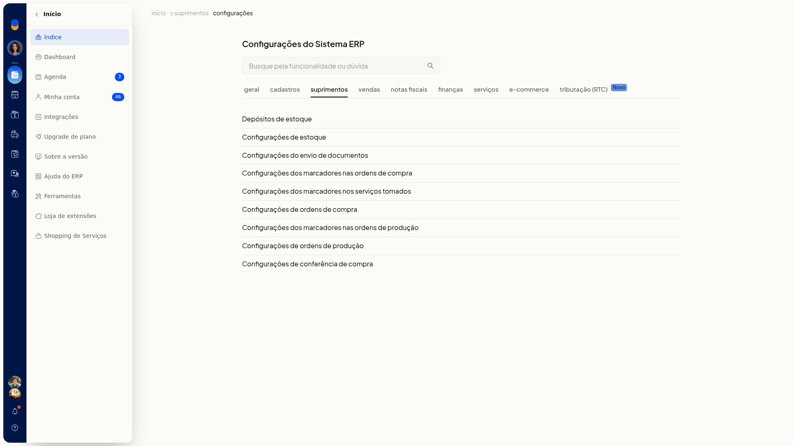
-
Marque ou desmarque Lançar estoque automaticamente para as ordens filhas, Imprimir Cliente na Ordem de Produção e Imprimir observações da Ordem de Produção na necessidade de materiais.

-
Clique em Salvar para gravar o que será lançado nas ordens filhas e o que sai na impressão. Cancelar descarta.
Cadastrar marcadores
-
Acesse Configurações > Configurações ERP.
-
Na lista de Suprimentos, clique em Configurações dos marcadores nas ordens de produção. A tela Configuração de marcadores, no contexto Ordens de produção, tem pesquisa e a coluna Descrição.
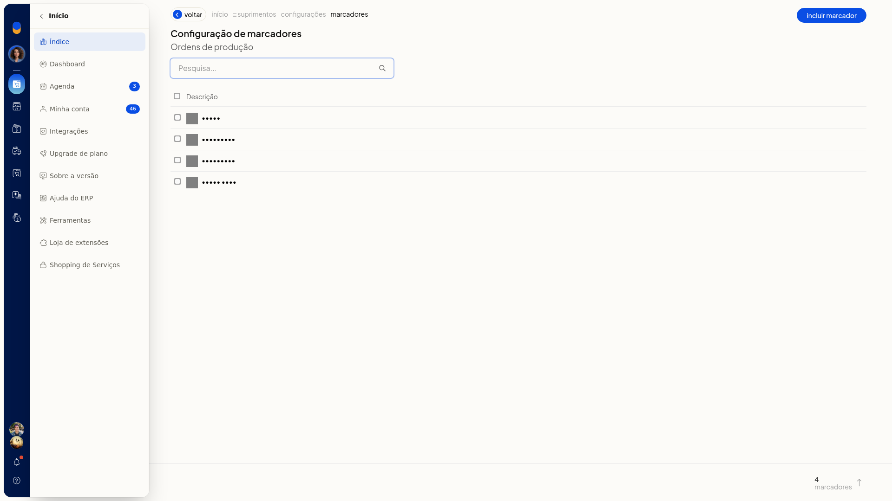
-
Clique em Incluir marcador.
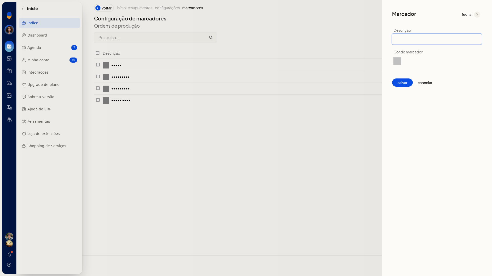
-
Informe a Descrição. A Cor do marcador aparece como uma amostra. A descrição não é obrigatória.
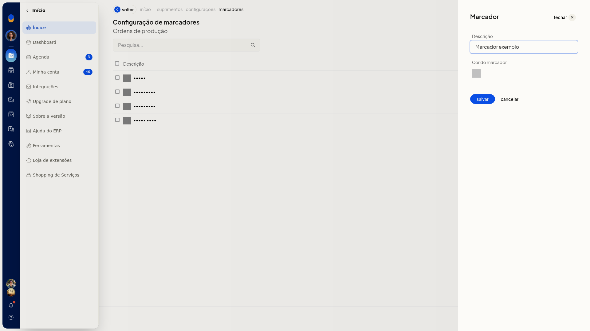
-
Clique em salvar para gravar o marcador usado nas ordens de produção. cancelar descarta. fechar sai do painel.
Informações adicionais
A lista mostra estas colunas
Número, Pedidos, Data, Data Prevista, Código (SKU) - Descrição do produto, Quantidade, Un, Marcadores e Integrações.
As abas e a alteração de situação usam nomes diferentes
Em Alterar situação, as opções são Pendente, Andamento, Finalizada e Cancelada. Nas abas da lista, as situações são Em aberto, Em andamento, Finalizada e Cancelada. Na ordem aberta, a situação exibida pode ser Pendente.
Ordens selecionadas têm ações em lote
Com ordens selecionadas, a lista oferece Imprimir, Lançar estoque, Alterar marcadores, Alterar situação, Imprimir etiquetas dos produtos, Excluir ordens de produção e Imprimir necessidade materiais.
O filtro de marcador lista o que já está cadastrado
O seletor Marcador tem opção sem filtro e sem marcadores, além dos marcadores já cadastrados. Você também pode informar marcadores no campo Marcadores ao incluir a ordem.